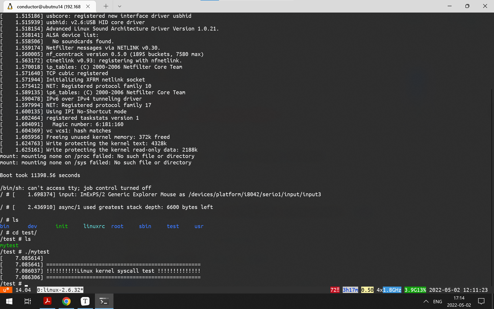

给Linux内核添加一个系统调用
添加系统调用
- 参考前一篇，先正常构建一个内核
- 需要修改3个地方：
1 | arch/x86/kernel/syscall_table_32.S |
- 在
arch/x86/kernel/syscall_table_32.S中添加系统调用
1 | diff --git a/arch/x86/kernel/syscall_table_32.S b/arch/x86/kernel/syscall_table_32.S |
- 在
arch/x86/include/asm/unistd_32.h中添加系统调用编号
1 | diff --git a/arch/x86/include/asm/unistd_32.h b/arch/x86/include/asm/unistd_32.h |
- 在
kernel/sys.c中实现具体的系统调用
1 | diff --git a/kernel/sys.c b/kernel/sys.c |
重新编译内核
1 | make -j8 |
在用户态测试系统调用
1 |
|
- 由于需要放到initramfs内，所以采用静态链接
1 | gcc mytest.c -o mytest -static |
- 然后按照上一篇文章的busybox方法创建initramfs，然后把mytest放到initramfs目录树中，运行即可：
1 | ./mytest |
